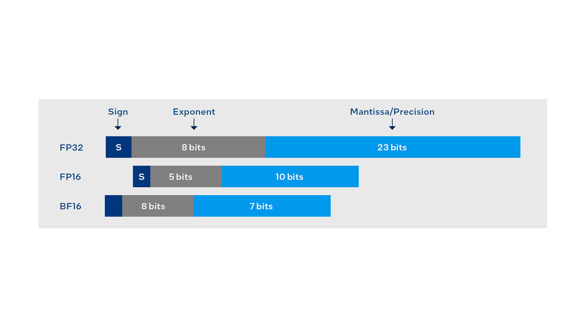

Siemens Healthineers speeds up the execution of AI models, lowers system cost and complexity, and reduces energy consumption.
Siemens Healthineers is committed to helping healthcare professionals deliver quality care and improve patient experience and outcomes by transforming care delivery and precision medicine with artificial intelligence (AI).
Supporting radiation therapy professionals with AI-based organ contouring technology can increase workload efficiency, improve consistency, and help free staff to focus on value adding work.
In collaboration with Intel, Siemens Healthineers optimized artificial intelligence (AI) inference time for organ autocontouring algorithms using the Intel® Distribution of OpenVINO™ toolkit on a two-socket 4th Gen Intel® Xeon® Scalable processor platform. This implementation achieved a 35x speedup 1 compared to a similar 3rd Gen Intel® Xeon® Scalable processor-based platform. As a result of this speedup, the AI inference for contouring a typical abdominal scan with nine structures took only 200 milliseconds. This article provides details on the radiation therapy use case and how Intel® technologies helped achieve this significant speedup.
The AI in healthcare market is projected to grow at a compound annual growth rate (CAGR) of
47.6 percent from USD 14.6 billion in 2023 to USD 102.7 billion in 2028.2 This
growth is being driven by numerous factors, including the availability of digital data, the
demand to reduce healthcare costs, and improved computing power in reduced-cost hardware.
There is also a rising trend in using innovative solutions to achieve a better balance
between limited numbers of healthcare professionals and a growing patient population.
With rising rates of chronic diseases, such as cancer,3 healthcare practitioners
are turning to AI and machine learning to support medical imaging. Radiation therapy
planning is a key use case where advances in AI and compute performance for medical imaging
are enabling practitioners to provide faster, more-efficient treatments to patients.
Together, Intel and Siemens Healthineers leveraged the higher compute performance and memory bandwidth, along with Intel® AMX and the BF16 data type, to showcase a dramatic impact on AI inferencing speed.
RT planning is a complex process that relies on advanced imaging technology.4 The
process usually begins with image simulation, in which practitioners use three-dimensional
(3D) computed tomography (CT), magnetic resonance imaging (MRI), or a combination thereof,
to visualize patient anatomy. Then a radiologist—or a radiation oncologist in the case of a
cancer diagnosis—contours the relevant target or tumor volumes, compares them to normal
tissue volumes, and communicates the goals for RT planning. The treatment plan identifies
where the therapeutic dosage of radiation will be used while avoiding nearby, normal
tissues.
Contouring organs at risk (OARs) is an essential step in which RT professionals manually
contour tens of organs on a CT dataset or other modality. This process is monotonous and
time consuming, and the resulting contours can often lack consistency because they differ
from specialist to specialist.
AI-based automated contouring solutions help boost the efficiency and consistency of RT
while freeing up professionals to focus on other important tasks. The solutions use
convolutional deep neural networks with millions of parameters that are extremely complex
and compute intensive. To deliver fast results and responsive interactivity, the underlying
architecture powering these solutions needs to provide purpose-built AI acceleration.
Siemens Healthineers evaluated an innovative AI-based autocontouring algorithm on a system
powered by the 4th Gen Intel Xeon Scalable processor. This processor features the latest
microarchitecture and Intel® Advanced Matrix
Extensions (Intel® AMX)—a built-in AI accelerator that supports
quantization of models to the brain floating 16 (bfloat 16 or bf16) numeric data type. The
built-in AI accelerator is architected to speed up AI workloads and can also offload AI
workloads from the CPU core to enable fast processing. On top of the built-in accelerator,
the Intel Distribution of OpenVINO toolkit uses varying graph optimization techniques to
further improve AI performance. The result was significantly faster AI-based autocontouring
of organs at risk in radiology scans, which also freed up CPU resources to focus on other
important tasks to help practitioners improve the quality of patient care.
Intel AMX is a 64-bit programming paradigm consisting of two components:5
Intel AMX is an extensible architecture. New accelerators can be added, or the TMUL accelerator may be enhanced to provide higher performance. Architectural details on Intel AMX can be found in Chapter 3 of the Intel® Architecture Instruction Set Extensions and Future Features programming reference guide.
The Siemens Healthineers team used the Intel Distribution of OpenVINO toolkit to implement graph optimization techniques that improved inference latency and throughput.
Some key graph optimization techniques included:
With these techniques, Siemens Healthineers were able to achieve more efficient computation and hardware-specific optimization at runtime, greatly speeding up inference times.
BF16 is a floating point numerical data type occupying 16 bits in computer memory. It was developed by a Google AI research group and is currently used in several processors, including 3rd and 4th Gen Intel Xeon Scalable processors. Most commercial applications in AI currently use 32-bit floating point (FP32), single precision, for training and inference workloads.
Figure 1: The differences across FP32, FP16, and BF16 numerical data types.
However, researchers have demonstrated lower numerical precisions for both training and inference workloads—using 16-bit multipliers with 32-bit accumulators and little to no loss in accuracy—and for some inference workloads—using 8-bit multipliers with 32-bit accumulators and some to minimal loss in accuracy. Given the performance improvement with lower precision and minimal accuracy loss, the industry is moving toward half-precision 16-bit floating point (FP16) and BF16 for training and inference over a subset of workloads. Figure 1 shows the differences between BF16 and FP32 data types.
The compute-intensive operation of AI and deep learning workloads consists of convolutions and general matrix-multiply (GEMM) and general matrix-vector (GEMV) multiplications.6 These operations can take advantage of the parallelism offered in single instruction, multiple data (SIMD) processing to process several multiply accumulates (MACs) per instruction. A MAC adds the product of two values to another value: the accumulated sum. Using a lower numerical representation can increase the number of MACs per cycle—assuming the hardware supports this—and can reduce memory, memory bandwidth, network bandwidth, and power consumption.
Intel AMX within the 4th Gen Intel Xeon Scalable processor is composed of TMUL integer 8 (int8), TMUL BF16, and the tiles that act as 2D registers. The Siemens Healthineers team evaluated TMUL BF16 to demonstrate significant gains over the FP32 data type used with Intel® Advanced Vector Extensions 512 (Intel® AVX-512) in previous-generation processors. Together, Intel and Siemens Healthineers leveraged the new CPU microarchitecture with increased compute performance and memory bandwidth, combined with Intel AMX, the BF16 data type, and Intel Distribution of OpenVINO toolkit optimizations to showcase a substantial impact on AI inferencing speed.
As part of their research, the Siemens Healthineers team benchmarked the AI inference time for an autocontouring solution enabled by 4th Gen Intel Xeon Scalable processors and the Intel Distribution of OpenVINO toolkit. They achieved a 35x speedup1 compared to a similar solution enabled by 3rd Gen Intel Xeon Scalable processors. This acceleration empowered the AI inference algorithm to contour a typical abdominal scan with nine structures in only 200 milliseconds.
The benefits of AI acceleration starting at the chip level While the Siemens Healthineers supercomputer is powered by 100 percent renewable energy, the hardware/software acceleration in the latest processor helps boost performance without increasing power requirements, allowing Siemens Healthineers to further reduce system cost, complexity, and energy consumption. Medical solutions also require lengthy periods of development and certification prior to deployment. Select SKUs of 4th Gen Intel Xeon Scalable processors deliver long-life availability, which extends the life span of solutions with years of uninterrupted infrastructure supply to support continuous research and innovation.
In today’s world, with the ever-increasing integration of technology in human life and a surging human population with various healthcare concerns globally, it’s imperative that leading healthcare companies like Siemens Healthineers join forces with leading technology companies like Intel to explore technological advancements. This collaboration will lead to faster adoption and deployment of advanced tools and techniques, such as built-in AI acceleration for radiation therapy planning work, that help clinicians improve the quality of care for billions of patients all over the globe.
Siemens Healthineers’ portfolio of products, services, and solutions is at the center of clinical decision-making and treatment pathways, with a core focus on patient-centered innovation. Siemens Healthineers aspire to create better outcomes and experiences for patients, no matter where they live or what they are facing.

Explore the latest customer stories, case studies, and news releases highlighting data-centric innovations.
Learn how Intel® technologies can help provide the scalability needed for high-demand workloads and applications.
Get the latest information about Intel data center performance, flexibility, and scalability.